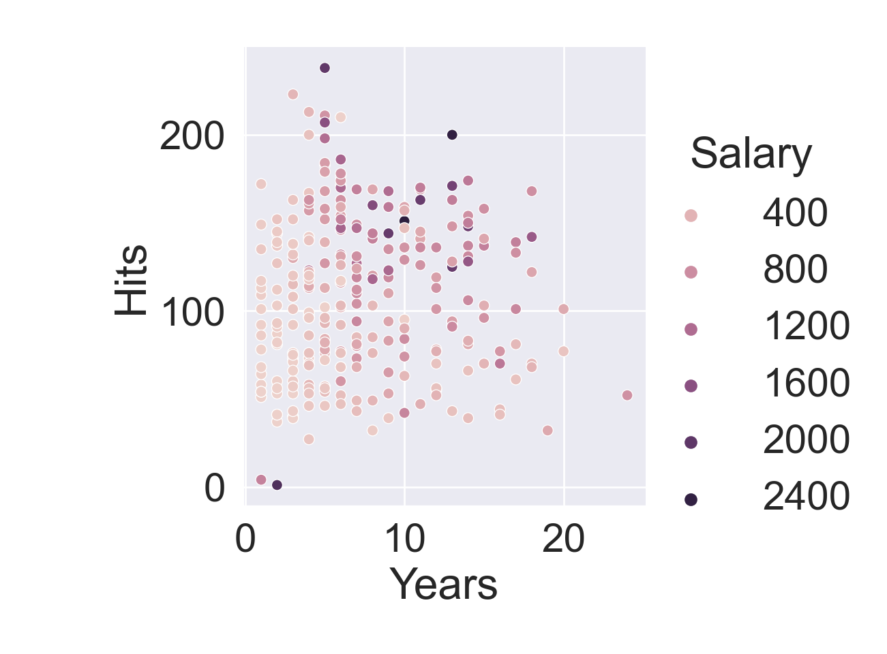

R version 4.2.2 (2022-10-31)
Platform: x86_64-apple-darwin17.0 (64-bit)
Running under: macOS Big Sur ... 10.16
Matrix products: default
BLAS: /Library/Frameworks/R.framework/Versions/4.2/Resources/lib/libRblas.0.dylib
LAPACK: /Library/Frameworks/R.framework/Versions/4.2/Resources/lib/libRlapack.dylib
locale:
[1] en_US.UTF-8/en_US.UTF-8/en_US.UTF-8/C/en_US.UTF-8/en_US.UTF-8
attached base packages:
[1] stats graphics grDevices utils datasets methods base
loaded via a namespace (and not attached):
[1] Rcpp_1.0.10 here_1.0.1 lattice_0.20-45 png_0.1-8
[5] rprojroot_2.0.3 digest_0.6.31 grid_4.2.2 jsonlite_1.8.4
[9] evaluate_0.20 rlang_1.0.6 cli_3.6.0 rstudioapi_0.14
[13] Matrix_1.5-3 reticulate_1.28 rmarkdown_2.20 tools_4.2.2
[17] htmlwidgets_1.6.1 xfun_0.37 yaml_2.3.7 fastmap_1.1.0
[21] compiler_4.2.2 htmltools_0.5.4 knitr_1.42
1 Overview
In this lecture, we describe tree-based methods for regression and classification.
These involve stratifying or segmenting the predictor space into a number of simple regions.
Since the set of splitting rules used to segment the predictor space can be summarized in a tree, these types of approaches are known as decision-tree methods.
1.1 Pros and cons of decision tree
Tree-based methods are simple and useful for interpretation.
However they typically are not competitive with the best supervised learning approaches in terms of prediction accuracy.
Hence we also discuss bagging, random forests, and boosting. These methods grow multiple trees which are then combined to yield a single consensus prediction.
Combining a large number of trees can often result in dramatic improvements in prediction accuracy, at the expense of some loss of interpretation.
2 The basics of decision trees
Decision trees can be applied to both regression and classification problems.
We first consider regression problems, and then move on to classification.
# Load the pandas libraryimport pandas as pd# Load numpy for array manipulationimport numpy as np# Load seaborn plotting libraryimport seaborn as snsimport matplotlib.pyplot as plt# Set font sizes in plotssns.set(font_scale =2)# Display all columnspd.set_option('display.max_columns', None)Hitters = pd.read_csv("../data/Hitters.csv")Hitters
AtBat Hits HmRun Runs RBI Walks Years CAtBat CHits CHmRun \
0 293 66 1 30 29 14 1 293 66 1
1 315 81 7 24 38 39 14 3449 835 69
2 479 130 18 66 72 76 3 1624 457 63
3 496 141 20 65 78 37 11 5628 1575 225
4 321 87 10 39 42 30 2 396 101 12
.. ... ... ... ... ... ... ... ... ... ...
317 497 127 7 65 48 37 5 2703 806 32
318 492 136 5 76 50 94 12 5511 1511 39
319 475 126 3 61 43 52 6 1700 433 7
320 573 144 9 85 60 78 8 3198 857 97
321 631 170 9 77 44 31 11 4908 1457 30
CRuns CRBI CWalks League Division PutOuts Assists Errors Salary \
0 30 29 14 A E 446 33 20 NaN
1 321 414 375 N W 632 43 10 475.0
2 224 266 263 A W 880 82 14 480.0
3 828 838 354 N E 200 11 3 500.0
4 48 46 33 N E 805 40 4 91.5
.. ... ... ... ... ... ... ... ... ...
317 379 311 138 N E 325 9 3 700.0
318 897 451 875 A E 313 381 20 875.0
319 217 93 146 A W 37 113 7 385.0
320 470 420 332 A E 1314 131 12 960.0
321 775 357 249 A W 408 4 3 1000.0
NewLeague
0 A
1 N
2 A
3 N
4 N
.. ...
317 N
318 A
319 A
320 A
321 A
[322 rows x 20 columns]
Visualize:
plt.figure()sns.relplot( data = Hitters, x ='Years', y ='Hits', hue ='Salary');plt.show()

Who are those two outliers?
Hitters[Hitters['Hits'] <10]
AtBat Hits HmRun Runs RBI Walks Years CAtBat CHits CHmRun \
52 19 7 0 1 2 1 4 41 13 1
64 24 3 0 1 0 2 3 159 28 0
217 20 1 0 0 0 0 2 41 9 2
250 33 6 0 2 4 7 1 33 6 0
283 16 2 0 1 0 0 2 28 4 0
295 19 4 1 2 3 1 1 19 4 1
CRuns CRBI CWalks League Division PutOuts Assists Errors Salary \
52 3 4 4 A E 0 0 0 NaN
64 20 12 9 A W 80 4 0 NaN
217 6 7 4 N E 78 220 6 2127.333
250 2 4 7 A W 205 5 4 NaN
283 1 0 0 A E 247 4 8 NaN
295 2 3 1 N W 692 70 8 920.000
NewLeague
52 A
64 A
217 N
250 A
283 A
295 A
A simple decision tree for this data:
Overall, the tree stratifies or segments the players into three regions of predictor space: \[\begin{eqnarray*}
R_1 &=& \{ X \mid \text{Years} < 4.5\} \\
R_2 &=& \{ X \mid \text{Years} \ge 4.5, \text{Hits} < 117.5\} \\
R_3 &=& \{ X \mid \text{Years} \ge 4.5, \text{Hits} \ge 117.5\}
\end{eqnarray*}\]
Terminology:
In keeping with the tree analogy, the regions \(R_1\), \(R_2\), and \(R_3\) are known as terminal nodes.
Decision trees are typically drawn upside down, in the sense that the leaves are at the bottom of the tree.
The points along the tree where the predictor space is split are referred to as internal nodes.
In the Hitters tree, the two internal nodes are indicated by the Years<4.5 and Hits<117.5.
Interpretation of decision tree results:
Years is the most important factor in determining Salary, and players with less experience earn lower salaries than more experienced players.
Given that a player is less experienced, the number of Hits that he made in the previous year seems to play little role in his Salary.
But among players who have been in the major leagues for five or more years, the number of Hits made in the previous year does affect Salary, and players who made more Hits last year tend to have higher salaries.
Surely an over-simplification, but compared to a regression model, it is easy to display, interpret and explain.
4 Tree-building process
We divide the predictor space into J distinct and non-overlapping regions: \(R_1, R_2, \ldots, R_J\).
For every observation that falls into the region \(R_j\), we make the same prediction, which is simply the mean of the response values for the training observations in \(R_j\).
In theory, the regions could have any shape. However, we choose to divide the predictor space into high-dimensional rectangles, or boxes, for simplicity and for ease of interpretation of the resulting predictive model.
The goal is to find boxes \(R_1, \ldots, R_J\) that minimize the RSS, given by \[
\sum_{j=1}^J \sum_{i \in R_j} (y_i - \hat y_{R_j})^2,
\] where \(\hat y_{R_j}\) is the mean response for the training observations within the \(j\)th box.
Unfortunately, it is computationally infeasible to consider every possible partition of the feature space into \(J\) boxes.
For this reason, we take a top-down, greedy approach that is known as recursive binary splitting.
The approach is top-down because it begins at the top of the tree and then successively splits the predictor space; each split is indicated via two new branches further down on the tree.
It is greedy because at each step of the tree-building process, the best split is made at that particular step, rather than looking ahead and picking a split that will lead to a better tree in some future step.
We first select the predictor \(X_j\) and the cutpoint \(s\) such that splitting the predictor space into the regions \(\{X \mid X_j < s\}\) and \(\{X \mid X_j \ge s\}\) leads to the greatest possible reduction in RSS.
Next, we repeat the process, looking for the best predictor and best cutpoint in order to split the data further so as to minimize the RSS within each of the resulting regions.
However, this time, instead of splitting the entire predictor space, we split one of the two previously identified regions. We now have three regions.
Again, we look to split one of these three regions further, so as to minimize the RSS. The process continues until a stopping criterion is reached; for instance, we may continue until no region contains more than five observations.
5 Predictions
We predict the response for a given test observation using the mean of the training observations in the region to which that test observation belongs.
Figure 1: Top left: A partition of two-dimensional feature space that could not result from recursive binary splitting. Top right: The output of recursive binary splitting on a two-dimensional example. Bottom left: A tree corresponding to the partition in the top right panel. Bottom right: A perspective plot of the prediction surface corresponding to that tree.
6 Prunning
The process described above may produce good predictions on the training set, but is likely to overfit the data, leading to poor test set performance.
A smaller tree with fewer splits (that is, fewer regions \(R_1, \ldots, R_J\)) might lead to lower variance and better interpretation at the cost of a little bias.
One possible alternative to the process described above is to grow the tree only so long as the decrease in the RSS due to each split exceeds some (high) threshold. This strategy will result in smaller trees, but is too short-sighted: a seemingly worthless split early on in the tree might be followed by a very good split.
A better strategy is to grow a very large tree \(T_0\), and then prune it back in order to obtain a subtree.
Cost complexity pruning, aka weakest link pruning, is used to do this.
we consider a sequence of trees indexed by a nonnegative tuning parameter \(\alpha\). For each value of \(\alpha\) there corresponds a subtree \(T \subset T_0\) such that \[
\sum_{m=1}^{|T|} \sum_{i: x_i \in R_m} (y_i - \hat y_{R_m})^2 + \alpha |T|
\] is as small as possible. Here \(|T|\) indicates the number of terminal nodes of the tree \(T\), \(R_m\) is the rectangle (i.e. the subset of predictor space) corresponding to the \(m\)th terminal node, and \(\hat y_{R_m}\) is the mean of the training observations in \(R_m\).
The tuning parameter \(\alpha\) controls a trade-off between the subtree’s complexity and its fit to the training data.
We select an optimal value \(\hat \alpha\) using cross-validation.
We then return to the full data set and obtain the subtree corresponding to \(\hat \alpha\).
7 Summary: tree algorithm
Use recursive binary splitting to grow a large tree on the training data, stopping only when each terminal node has fewer than some minimum number of observations.
Apply cost complexity pruning to the large tree in order to obtain a sequence of best subtrees, as a function of \(\alpha\).
Use \(K\)-fold cross-validation to choose \(\alpha\). For each \(k = 1,\ldots,K\):
3.1 Repeat Steps 1 and 2 on the \((K-1)/K\) the fraction of the training data, excluding the \(k\)th fold.
3.2 Evaluate the mean squared prediction error on the data in the left-out \(k\)th fold, as a function of \(\alpha\).
Average the results, and pick \(\alpha\) to minimize the average error.
Return the subtree from Step 2 that corresponds to the chosen value of \(\alpha\).
Very similar to a regression tree, except that it is used to predict a qualitative response rather than a quantitative one.
For a classification tree, we predict that each observation belongs to the most commonly occurring class of training observations in the region to which it belongs.
Just as in the regression setting, we use recursive binary splitting to grow a classification tree.
In the classification setting, RSS cannot be used as a criterion for making the binary splits. A natural alternative to RSS is the classification error rate. This is simply the fraction of the training observations in that region that do not belong to the most common class: \[
E = 1 - \max_k (\hat p_{mk}).
\] Here \(\hat p_{mk}\) represents the proportion of training observations in the \(m\)th region that are from the \(k\)th class.
However classification error is not sufficiently sensitive for tree-growing, and in practice two other measures are preferable.
The Gini index is defined by \[
G = \sum_{k=1}^K \hat p_{mk}(1 - \hat p_{mk}),
\] a measure of total variance across the \(K\) classes. The Gini index takes on a small value if all of the \(\hat p_{mk}\)’s are close to zero or one. For this reason the Gini index is referred to as a measure of node purity. A small value indicates that a node contains predominantly observations from a single class.
An alternative to the Gini index is cross-entropy, given by \[
D = - \sum_{k=1}^K \hat p_{mk} \log \hat p_{mk}.
\] It turns out that the Gini index and the cross-entropy are very similar numerically.
Figure 2: Top Row: True linear boundary; Bottom row: true non-linear boundary. Left column: linear model; Right column: tree-based model
12 Pros and cons of decision trees
Advantages:
Trees are very easy to explain to people. In fact, they are even easier to explain than linear regression!
Some people believe that decision trees more closely mirror human decision-making than other regression and classification approaches we learnt in this course.
Trees can be displayed graphically, and are easily interpreted even by a non-expert (especially if they are small).
Trees can easily handle qualitative predictors without the need to create dummy variables, although scikit-learn and xgboost don’t allow categorical predictors yet???
Disadvantages:
Unfortunately, trees generally do not have the same level of predictive accuracy as some of the other regression and classification approaches.
Additionally, trees can be very non-robust. In other words, a small change in the data can cause a large change in the final estimated tree.
Ensemble methods such as bagging, random forests, and boosting solve these issues.
13 Bagging
Bootstrap aggregation, or bagging, is a general-purpose procedure for reducing the variance of a statistical learning method. It is particularly useful and frequently used in the context of decision trees.
Recall that given a set of \(n\) independent observations \(Z_1, \ldots, Z_n\), each with variance \(\sigma^2\), the variance of the mean \(\bar Z\) of the observations is given by \(\sigma^2 / n\). In other words, averaging a set of observations reduces variance. Of course, this is not practical because we generally do not have access to multiple training sets.
Instead, we can bootstrap, by taking repeated samples from the (single) training data set.
In this approach we generate \(B\) different bootstrapped training data sets. We then train our method on the \(b\)th bootstrapped training set in order to get \(\hat f^{*b}(x)\), the prediction at a point \(x\). We then average all the predictions to obtain \[
\hat f_{\text{bag}}(x) = \frac{1}{B} \sum_{b=1}^B \hat f^{*b}(x).
\] This is called bagging.
These trees are grown deep, and are not pruned.
The above prescription applied to regression trees.
For classification trees: for each test observation, we record the class predicted by each of the \(B\) trees, and take a majority vote: the overall prediction is the most commonly occurring class among the \(B\) predictions.
Figure 3: The test error (black and orange) is shown as a function of \(B\), the number of bootstrapped training sets used. Random forests were applied with \(m = \sqrt{p}\). The dashed line indicates the test error resulting from a single classification tree. The green and blue traces show the OOB error, which in this case is considerably lower.
14 Out-of-Bag (OOB) error estimation
There is a very straightforward way to estimate the test error of a bagged model.
Recall that the key to bagging is that trees are repeatedly fit to bootstrapped subsets of the observations. Each bagged tree makes use of around two-thirds of the observations (HW2).
The remaining one-third of the observations not used to fit a given bagged tree are referred to as the out-of-bag (OOB) observations.
We can predict the response for the \(i\)th observation using each of the trees in which that observation was OOB. This will yield around \(B/3\) predictions for the \(i\)th observation, which we average.
This estimate is essentially the LOO cross-validation error for bagging, if \(B\) is large.
15 Random forests
Random forests provide an improvement over bagging by a small tweak that decorrelates the trees. This reduces the variance when we average the trees.
As in bagging, we build a number of decision trees on bootstrapped training samples.
But when building these decision trees, each time a split in a tree is considered, a random selection of \(m\) predictors is chosen as split candidates from the full set of \(p\) predictors. The split is allowed to use only one of those \(m\) predictors.
A fresh selection of \(m\) predictors is taken at each split, and typically we choose \(m \approx \sqrt{p}\) (4 out of the 13 for the Heart data).
Gene expression data.
Figure 4: Results from random forests for the fifteen-class gene expression data set with \(p=500\) predictors. The test error is displayed as a function of the number of trees. Each colored line corresponds to a different value of \(m\), the number of predictors available for splitting at each interior tree node. Random forests (\(m < p\)) lead to a slight improvement over bagging (\(m = p\)). A single classification tree has an error rate of 45.7%.
Like bagging, boosting is a general approach that can be applied to many statistical learning methods for regression or classification. We only discuss boosting for decision trees.
Recall that bagging involves creating multiple copies of the original training data set using the bootstrap, fitting a separate decision tree to each copy, and then combining all of the trees in order to create a single predictive model.
Notably, each tree is built on a bootstrap data set, independent of the other trees.
Boosting works in a similar way, except that the trees are grown sequentially: each tree is grown using information from previously grown trees.
Boosting algorithm for regression trees
Set \(\hat f(x) = 0\) and \(r_i = y_i\) for all \(i\) in the training set.
For \(b=1,2,\ldots,B\), repeat:
2.1 Fit a tree \(\hat f^b\) with \(d\) splits (\(d+1\) terminal nodes) to the training data \((X, r)\).
2.2 Update \(\hat f\) by adding in a shrunken version of the new tree: \[
\hat f(x) \leftarrow \hat f(x) + \lambda \hat f^b(x).
\] 2.3 Update the residuals, \[
r_i \leftarrow r_i - \lambda \hat f^b(x_i).
\]
Unlike fitting a single large decision tree to the data, which amounts to fitting the data hard and potentially overfitting, the boosting approach instead learns slowly.
Given the current model, we fit a decision tree to the residuals from the model. We then add this new decision tree into the fitted function in order to update the residuals.
Each of these trees can be rather small, with just a few terminal nodes, determined by the parameter \(d\) in the algorithm.
By fitting small trees to the residuals, we slowly improve \(\hat f\) in areas where it does not perform well. The shrinkage parameter \(\lambda\) slows the process down even further, allowing more and different shaped trees to attack the residuals.
19 Boosting for classification
See ESL Chapter 10.
Gene expression example (continued).
Figure 5: Results from performing boosting and random forests on the fifteen-class gene expression data set in order to predict cancer versus normal. The test error is displayed as a function of the number of trees. For the two boosted models, \(\lambda=0.01\). Depth-1 trees slightly outperform depth-2 trees, and both outperform the random forest, although the standard errors are around 0.02, making none of these differences significant. The test error rate for a single tree is 24%.
20 Tuning parameters for boosting
The number of trees\(B\). Unlike bagging and random forests, boosting can overfit if \(B\) is too large, although this overfitting tends to occur slowly if at all. We use cross-validation to select \(B\).
The shrinkage parameter or learning rate\(\lambda\), a small positive number. This controls the rate at which boosting learns. Typical values are 0.01 or 0.001, and the right choice can depend on the problem. Very small \(\lambda\) can require using a very large value of \(B\) in order to achieve good performance.
The number of splits\(d\) in each tree, which controls the complexity of the boosted ensemble. Often \(d = 1\) or 2 works well, in which case each tree is a stump, consisting of a single split and resulting in an additive model. More generally \(d\) is the interaction depth, and controls the interaction order of the boosted model, since \(d\) splits can involve at most \(d\) variables.
21 Variable importance (VI) measure
For bagged/RF regression trees, we record the total amount that the RSS is decreased due to splits over a given predictor, averaged over all \(B\) trees. A large value indicates an important predictor.
Similarly, for bagged/RF classification trees, we add up the total amount that the Gini index is decreased by splits over a given predictor, averaged over all \(B\) trees.
Figure 6: Variable importance plot for the Heart data.
Decision trees are simple and interpretable models for regression and classification.
However they are often not competitive with other methods in terms of prediction accuracy.
Bagging, random forests and boosting are good methods for improving the prediction accuracy of trees. They work by growing many trees on the training data and then combining the predictions of the resulting ensemble of trees.
The latter two methods, random forests and boosting, are among the state-of-the-art methods for supervised learning. However their results can be difficult to interpret.